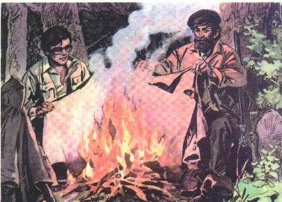

大森林的主人
语文课本
秋雨下了整整一个星期。灰色的云层低低地压在大森林上面，潮湿的风缓缓地吹着。吸饱雨水的树枝垂下来。河水涨到齐了岸。我和猎人划着小船顺流而下。到了河身狭窄的地方，小船突然撞在水面下的树桩上，翻了。食物和打来的野味全给冲走了，我们只好带着猎枪上了岸。 这里离住所还很远。我们俩浑身是水，又累又饿。我冷得发抖，呆呆地望着猎人，希望他有个办法。猎人不声不响，只顾拧他的衣服。“应该生一堆火呀！”我提议，可是从口袋里摸出火柴盒一看，里面竟流出水来。 猎人还是不声不响。他在一棵枞树的窟窿里找到了一些干的苔藓，又拿出一颗子弹，拔下弹头，把苔藓塞进弹壳，塞得紧紧的。他吩咐我：“你去找些干的树枝和树皮来。” 我找来了。他把那颗拔掉弹头的子弹装进枪膛，对着地面开了一枪。从枪口喷出来的苔藓烧着了。他小心地把火吹旺，把树枝和树皮一点儿一点儿加上去，不一会儿，篝火熊熊，烧得很旺。 “你照看火堆。我去打些野味来。”猎人说着，转到树背后就不见了。只听见树林里响了几枪。我还没捡到多少干柴，他已经回来了。几只松鸡挂在他腰上，摇摇晃晃的。 “我们做晚饭吧。”他说。他把火堆移到一边，用刀子在刚才烧火的地上挖了个洞。我把松鸡拔了毛，掏了内脏。猎人又找来几片大树叶，把松鸡裹好，放进洞里，盖上薄薄的一层土，然后在上面又烧起一堆火。 等我们把衣服烘干，松鸡也烧好了，扒开洞，就闻到一股香味。我们俩大吃起来，我觉得从来没吃过这么鲜美的东西。 天黑了，风刮过树顶，呼呼地响。 “睡吧。”猎人打了个呵欠说。 我的眼也快要合上了。可是这潮湿冰冷的地面，怎么能睡呢？ 猎人带着我折来许多枞树枝。他把两个火堆移开，在烤热的地面上铺上枞树枝，铺了厚厚的一层。热气透上来，暖烘烘的，我们睡得很舒服，跟睡在炕上一个样。 天亮了，我对猎人说：“你真有办法。要不是你，我一定要吃苦头了。” 猎人微笑着说：“大森林里，你不能像个客人，得像个主人。只要肯动脑筋，一切东西都可以拿来用。“